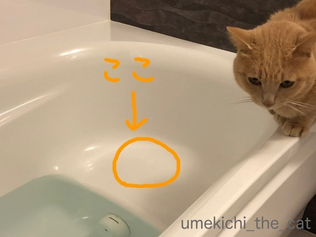
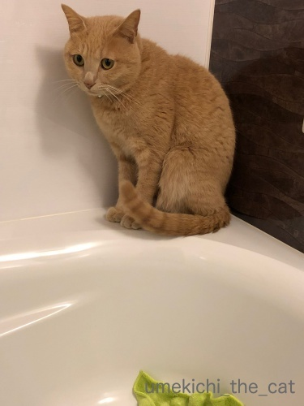
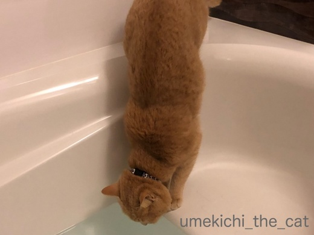
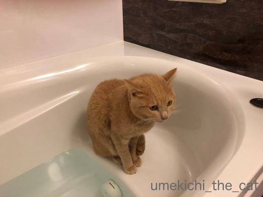
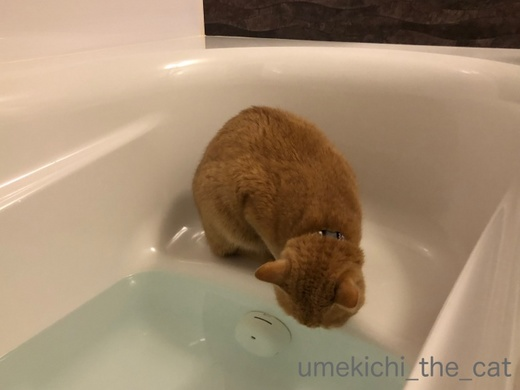
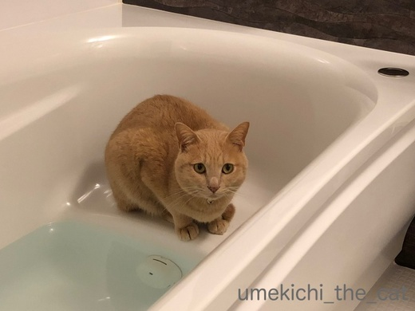
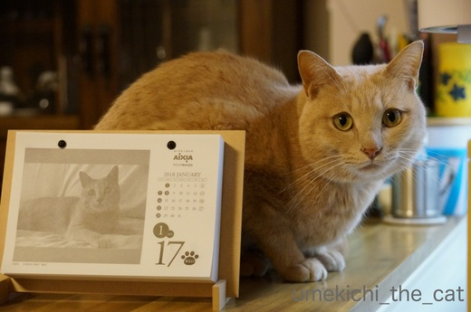

美味しいネコ様用床暖房 [梅吉]
朝、残り湯が減ったバスタブで何かをアピールする梅吉さん。
バスタブに落ちたことなどすっかり忘れている様子。

半身浴用の腰掛スペースに行きたいのです。

はいはい。そこをお拭きすれば良いのですねー。
朝忙しい下僕が拭かせていただきますよ・・・



それはやめてー！！
ちゃんと白湯は用意してあるのにお風呂の残り湯が好き・・・涙
綺麗な白湯を飲んで欲しいのに。
梅吉が飲んじゃうので我が家は入浴剤が使えません。

残り湯を抜いた直後のバスタブはほんわかと温いので気持ちが良いようです。
温くて白湯が飲める、梅吉には二つの良いことができる場所のようですよ(^▽^;)
そしてたった一度だけなのですが前足を残り湯につけて「前脚湯」を楽しんでいたようなのです。
おっとが目撃したのですが肩までじゃぼーんと浸かって
「あー、たまらんわぁ・・・」と目を細めてたんですって！
スマホを構えても時すでに遅し・・・
私も駆けつけましたが見ることはできませんでした〜
以来、梅吉が朝お風呂に向かう度にスマホ片手に粘っているのですがなかなかやってくれません。
来週からまた寒さが戻ってくるようなので暖を求めて「前脚湯」してくれないかなぁ。

昨日は梅吉の日でした！
日めくりカレンダーは来年までこのままですwww

カフェオレ色の梅吉

梅吉 2023年8月10日 永眠


梅吉と出会った譲渡会

犬猫の理由なき殺処分ゼロ
妄想広告
UMEKICHI 光

爆発的に早い！
時々攻撃的！
Thanks to Mr.Boss365
爆発的に早い！
時々攻撃的！
Thanks to Mr.Boss365

梅吉さん、ぬくぬくの床（ｗ）で暖かい白湯がいつでも飲める
この場所がお気に入りなんですね(^O^)
肩まで浸かって気持ち良さそうな前脚湯、私も是非とも見てみたいので
梅吉さん、ちぃさんよろしくお願いします<(_ _)>
by ニッキー (2018-01-18 16:16)
梅吉さん！ぬくぬくは良いですが
ゴクゴクは止めておいたほうが(;^_^A
足湯！！それは見てみたいですねぇ～
でもカメラ構えていると
しないことって多々ありますよね！
by きぃ (2018-01-18 16:25)
下僕殿が拭いてくれるまで、降りないのですね（感心です）
大きな器（バスタブ）から飲む白湯も良いもんじゃありませんか（笑）
前脚湯を是非見たいです。
梅吉さんとカレンダーのツーショット、
カラーは毛並みがはっきりして良いですね。
by kiki (2018-01-18 17:21)
先代の龍馬くんは、お風呂にやって来てました。
バスタオルを敷いてあげると、箱座りしてウトウト。
お湯飲みはしませんでしたねぇ。
テオさんちのエトちゃんはたしか大好物!?だったような(^^;
by も〜 (2018-01-18 17:23)
梅吉さん、湯船に首までどっぷり浸かる日が近いかも！
その時は頭に手ぬぐいのせて写真をお願いいたします<(_ _)>
ウチのも水飲み場5か所もあるのに、洗面所やお風呂、加湿器の底にたまっている決してきれいとは言い難い水をなめようとします(^▽^;)
おっ！2018年カレンダーは固定ですね！！
ウチは6月まで使って固定予定です(*^▽^*)
by ゆきち (2018-01-18 17:25)
梅吉さんなんでお風呂の水が良いのでしょうか？
落ちそうで危なっかしいですね(^^)
by ma2ma2 (2018-01-18 19:40)
梅吉くん、賢い♪
そこでぬくぬくしながら白湯を頂くｗルーチンなのでしょうね。
前足湯。肩まで浸かって目を細めていたなんて～！！
旦那様さぞ悔しがったことでしょう。
決定的瞬間のチャンスを逃すまいとスマホ片手に張ってるちぃさんの姿が
目に浮かびます(^-^)
by emi (2018-01-18 20:15)
浴槽に良い場所を見つけましたね＾＾
前脚湯してる梅吉くんを見たいです～( ´艸｀)
頭に手ぬぐい乗せて、お風呂に入る日も
近いかも＾＾
ちぃさんの頑張りに期待です～(≧▽≦)
by マーヤ (2018-01-18 20:22)
梅吉さんの気持ち、何となくわかりまます。
うちの猫は生前、カメの水槽（丘）に入るのが好きでした。
どうも紫外線ライトが暖かくて気持ちよかったみたいですね。
水に落ちなくて良かったですけど(^^;)
by kou (2018-01-18 21:37)
ぬくぬくスポットに腰掛スペースを見つけたなんて
賢いですね、梅吉さん。^^)
ウチのは、風呂桶にお湯を満たしておくと、
たまに飲んでいるみたいです。^^;
by yes_hama (2018-01-18 22:05)
梅吉さんの幸せそうな表情は、お風呂のせいなんですね。
可愛い！！
一年中、1/17ですね。それでいいと思います。
それ以外、考えられませんね(^^)
by riverwalk (2018-01-18 22:29)
足湯好きとはこれまた・・・（´▽｀）
風呂場のぬくもり、好きですよね。
我が家の真ん中も、朝、風呂場を開ける（換気のため）のを
ドアの前で待っています。フタの上ですが、暖かいみたいです。
梅吉くんの頭に、手ぬぐい乗せたいです(｡-_-｡)よろしくお願いします。笑
by Ja-Kou66 (2018-01-18 23:27)
決定的瞬間ってなぜかカメラのない時か撮れない状況の時に起きますよね。足湯写真は私も期待しま~す。
by zombiekong (2018-01-18 23:45)
おはようございます！
我が家もルナちゃんはお風呂とお風呂のお湯が大好きでした。
ルナちゃん用に洗面器に新しい白湯を用意したり石鹸やシャンプー
は安全な馬油を使用してました。
今の子たちもやっぱりお風呂場の洗面器で白湯を飲んでます（笑）
by yhiga-siura (2018-01-19 06:34)
うちの長男君も残り湯が好きでしたねぇ。
我が家のバスタブには玉座がないので
足を滑らせて落ちた事があります＾＾；
by ぽちの輔 (2018-01-19 06:35)
あ、うちの浴槽もおんなじ形です。
梅吉さん、上京の折は我が家の玉座へどうぞー（＾_＾）
by よーちゃん (2018-01-19 07:52)
ついにお風呂に浸かって楽しんだとは！さすが梅吉サマ、好奇心、創造力、そして行動力、想定外のことされはりますにゃ～！！
by Ginger (2018-01-19 13:09)
「前脚湯」見たい見た見たい～～(*´▽｀*)ナイスショットが撮れることを楽しみにしています!(^^)!
by palpal (2018-01-19 15:00)
ニッキーさん＞
毎朝お風呂のふたを開けるとブランケットにくるまっていても
いそいそとお風呂にやって来ますw
おとーさんと二度寝するよりも好きなようですよwww
前脚湯は説得しているのですがなかなか聞き入れて貰えません(^▽^;)
きぃさん＞
お風呂のお湯なんて美味しくないと思うのですが・・・
もしかして出汁が効いてるんでしょうか！
脚湯、頑張って撮影したいですー！！
というか私も見たいのー！！！
kikiさん＞
あ、誤解を生む表現でしたね(^▽^;)
少々お湯が残っていても濡れていてもずかずか入って行っちゃうので
「やめてー！！」と毎朝止めてますw
前脚湯、私も見たいのです！説得中なのですがなかなかやって貰えません・・・
も〜さん＞
梅吉も毎晩お風呂のフタの上でくつろいで私と一緒にバスタイムです♪
お湯を飲むのは朝だけなんですよねー。
夜の水温は流石に熱いのかしら＾＾
ゆきちさん＞
それ、夢です！一緒に湯船に浸かりたい♪
「あ”〜〜〜〜〜」なんて言ったりしてw
蛇口から直接お水を飲む子がいるかと思えば
ため水を好む子もいる・・・ネコ様もそれぞれですねー。
役に立たない日めくりカレンダー、お互いニヤニヤ眺めましょう＾＾
ma2ma2さん＞
綺麗な水の方が美味しいと思うんですが(-_-メ)
お風呂からいつ「じゃぼーん」と聞こえてくるかと思うと・・・
結構楽しみです(≧ω≦｡)
emiさん＞
からだをひやすのは あかんのや・・・と知っているのでしょうかー！？
白湯は私も梅吉を見習ってキレイなのを毎日飲んでますよ＾＾
そうそう！毎朝スマホをビデオモードにして洗面所に置きっ放しにしています。
張ってる時間がなくても家事の合間にお風呂に行ったり来たり。
梅吉の前脚湯姿を見たい一念です！
マーヤさん＞
半身浴の腰掛スペースは梅吉のためにあるような場所でした＾＾
どうせみなさんを驚かせるなら前脚湯よりも
頭に手ぬぐい乗せて肩までつかる、ですよねー！
頑張ってみます(^_－)☆
kouさん＞
水槽好きの猫もいましたかー！
何かのきっかけで「あったかい」ことに気づいたのでしょうね＾＾
でも、突然侵入してきた毛むくじゃらの生き物に
亀さんもびっくり！だったのではないでしょうか(^▽^;)
yes_hamaさん＞
ぬくぬくスポットは上手く見つけますよね。
「あそこ あったかいとちゃうんやろか・・・」なんて
考えて探しているかと思うと笑っちゃいますwww
アズ氏もため水派、なのでしょうか＾＾
riverwalkさん＞
あったかいところにいると幸せそうな顔をしますよね＾＾
それを見て私もニコニコです！
梅吉の日めくりはインテリアと化すと思ったので
ちゃんと他カレンダーを用意しました(≧ω≦｡)
Ja-Kou66さん＞
脚湯、人間と同じこと考えるんだと笑っちゃいました＾＾
猫族に新たな文化が生まれた瞬間かもしれません！
頭に手ぬぐい、どこぞの会社がCMでそんな猫を使っていましたが
梅吉はヤラセ、CGなしを目指します！！
zombiekongさん＞
瞬きをすると見たままを写せるカメラが開発中だとか・・・
そんなニュースを見たのですが私が生きているうちに実用化するかしら！
とりあえず今は、スマホをお湯風呂近くに置きっ放しにして
決定的瞬間に備えますw
yhiga-siuraさん＞
こんばんは＾＾
お風呂の残り湯が好きな子結構いるのですね！
我が家もシャンプーなどはなるべく自然派のものを選んでいます。
馬油はお風呂上がりに肘や膝に塗っているのですが
梅吉が舐めたがるので困ります。
油好きなんて、化け猫か！ですよねー(^▽^;)
ぽちの輔さん＞
あ、玉座があっても落ちますよ・・・(^▽^;)
運動神経が良んだか悪いんだかわかりませんwww
よーちゃん＞
おんなじ玉座付きのバスタブなんですね！
梅吉が伺うかもしれませんのでよろしくです＾＾
Gingerさん＞
やってくれましたー！
次は肩まで浸かって頭に手ぬぐいを目指します＾＾
palpalさん＞
私もみたいのー！前脚湯！！
動画で静止画で、がんばりますよー(๑˃̵ᴗ˂̵)و
by ちぃ (2018-01-19 18:24)
梅吉さん、暖かい良いところを見つけたんですね！」
前脚湯はすごい♪
たまり水、飲みたがりますよね～。
うちのは洗濯機の上に座り、隣の洗面台を見下ろして、その縁を私がきれいに拭くのを待ってたことがあります＾＾；
by sana (2018-01-20 17:48)
日めくりカレンダー、やっぱり美猫さんだ~。
前足湯…落ちませんように。
決定的瞬間、お待ちしております＾＾
by ふにゃいの (2018-01-20 21:32)
うちも入浴剤は使えませんー(笑)
うみちゃんがベロベロ舐めるからｗｗ
梅吉君の前脚湯、見てみたかったー！！！
by リュカ (2018-01-22 11:04)
猫の足湯シーンはわたしも見てみたいです。
by 響 (2018-01-22 12:44)
おぉ！ 梅吉さんカレンダーだっ！！
写真の中でも、目じりが下がったクリクリお目目がキュート♡
1月17日は梅吉さんの日、決定ですね(^^♪
ところで、通院の結果も良好でよかったです。
少しずつでも前進するのは、励みになりますもんね(^.^)
ペット保険の更新も済んだし、エブリシング オーケーやっ！！
by morichan (2018-01-23 11:11)
sanaさん＞
拭くのを待っていてくれるなんて賢い！！
うちの場合はお湯が引くか引かないかのうちに
ずかずか入っていくので腕で制しながら、が実情です(^▽^;)
前脚湯、今朝も監視していましたが気配なしです・・・
ふにゃいのさん＞
カレンダー、梅吉にしては珍しいきゅるるんの瞬間でした＾＾
前脚湯、決定的瞬間頑張りますー！
何より私も見てみたいのです(๑˃̵ᴗ˂̵)و
リュカさん＞
たまに入浴剤を使ってまったり入浴したいわーと思いませんかw
今は対処法も見つけましたが冬の入浴剤無しはカサカサしたりして
苦労しましたよー(^▽^;)
前脚湯！そうなの！！私もみたいのよーーー！！！
響さん＞
前脚湯、皆様からご期待の声を多数いただいております。
プレッシャーだわー！
でも梅吉はプレッシャーを力に変えてくれる子なので
そのうち必ずや！！
morichanさん＞
1月17日は阪神大震災の日でもあるので
ちょっと複雑でもあったのですが・・・
選考者の方には梅吉のまなざしが「祈り」に見えたのかもー！
なんて勝手に解釈しましたよ(^_－)☆
検査数値の方はいきなり「バーン」と下がるのもこわいかな？
ゆっくり改善してけばいいかな・・・と思っています。
保険は本年度はとりあえずホッとしました＾＾
by ちぃ (2018-01-23 12:35)